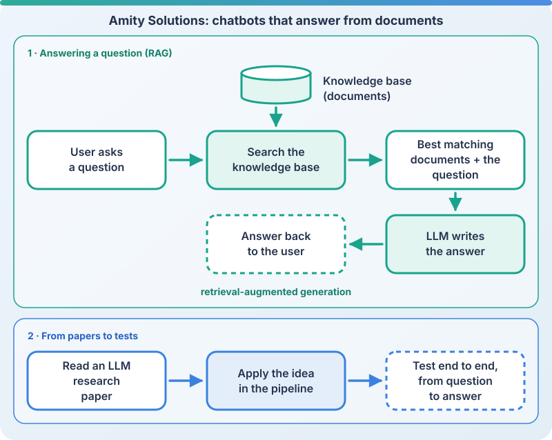

Industry · R&D intern, AI research team
LLM chatbots that answer from documents
Chatbots that search a knowledge base first, then let a large language model answer from what they found.
- Large language models
- Retrieval-augmented generation (RAG)
- Applying research papers
- End-to-end testing
- Prompt engineering
- Data analysis


Context
R&D internship on the AI research and development team at Amity Solutions, Bangkok (July to August 2023), working on the team's chatbots.
What I did
- RAG pipeline, end to end
- Ideas from LLM papers, applied and tested
- Data analysis and prompt engineering
Internship work, July to August 2023. No screens are shown; the diagram shows how the pipeline works.
How a chatbot answers
A user asks a question. The pipeline searches the knowledge base for the documents that match it best, gives those documents to the LLM together with the question, and the LLM writes the answer from them. This is called retrieval-augmented generation (RAG).
From papers to tests
I read recent research papers on LLMs, applied their ideas in the pipeline and tested them end to end, from the user's question to the final answer.
Also
Data analysis and prompt engineering for the team's chatbot work.